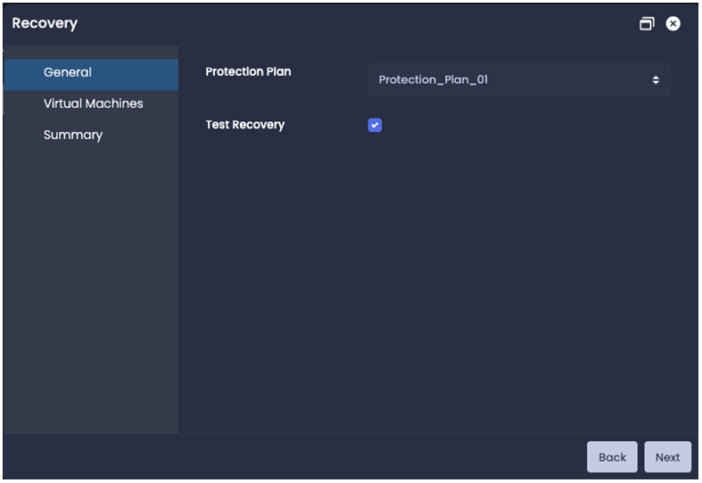
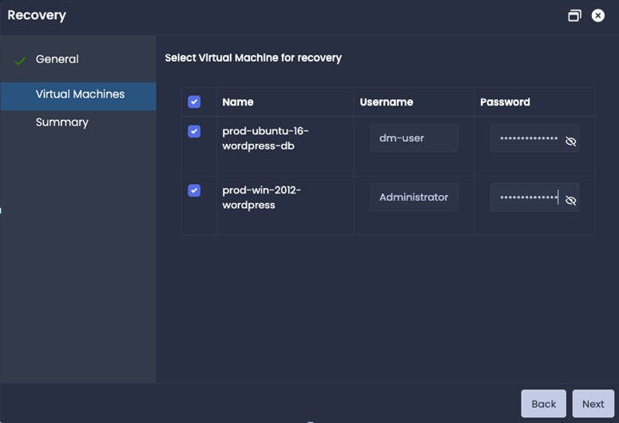
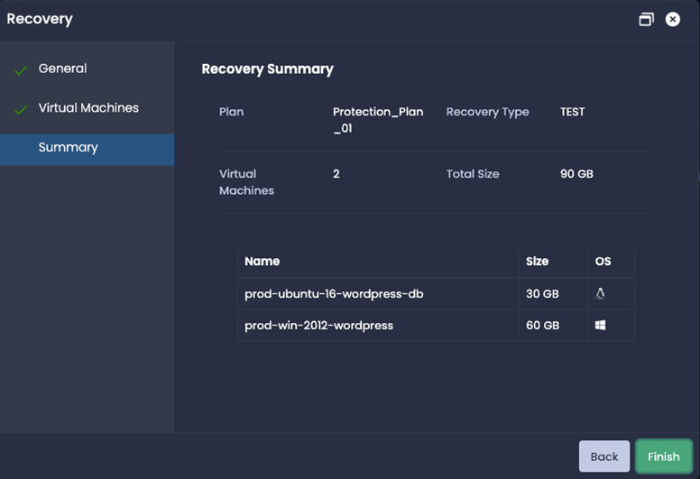
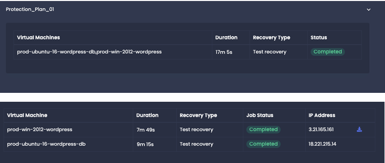
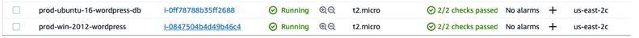

Test Recovery
To test the recovery workflow, go to Home —> Configuration —> Protection Plan on the server side. Click on Recover and Recovery window will pop-up.
Recovery Prerequisite
At least one replication job has been completed successfully for the virtual machine and the sync status for that job should be init-success.
General
| Protection Plan | select the protection plan . |
| Test Recovery | check the box. |
Virtual Machines
Select the virtual machines for the test recovery. Provide the credentials to execute the pre and post scripts. If there are no scripts for the virtual machine then credentials are not mandatory.
Credentials are not stored anywhere and only been used for the workflow.
NOTE : For Windows recovery on AWS, Credentials are mandatory even if there are no scripts.
Summary
Review the summary and click on finish to start the test recovery. This will start the test recovery jobs for the selected virtual machines and jobs can be monitored in the Home —> Jobs —> Recovery jobs tab.
AWS Console:

Test Recovery validation
Check the status of the virtual machines recovery jobs in the Home —> Jobs —> Recovery Jobs
Check the Cloud Console (AWS and GCP) for the instances with the virtual machines name and their running status. AWS also has status checks.
On successful completion of recovery jobs, IP Address can be found for the new running instances.
For Windows machines, download the RDP file by click the download button right next to the IP address and check the windows machine through RDP.
For Linux machines, copy the IP address and check the linux machine through ssh.